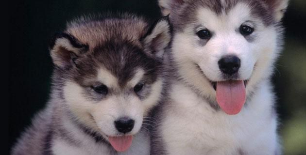
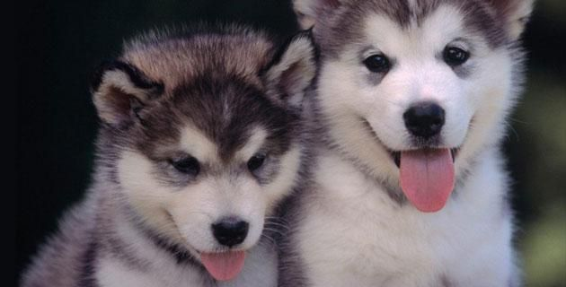

NUESTRAS MASCOTAS


 


MISION DE LA FUNDACION
Somos una fundación que implementa un modelo de intervención integral para promover el mejoramiento de la calidad de vida de perros y gatos abandonados, por medio de la adopción y apadrinamiento con el apoyo de donaciones y aportes voluntarios.
VISION DE LA FUNDACION
Seremos una fundación reconocida por el cuidado continuo de las mascotas abandonadas con la proyección hacia el futuro de ampliar nuestro campo de acción en todo el territorio nacional. NOTA: Esta página es un ejercicio académico las imágenes y algunos textos fueron tomadas de: https://www.google.com.co/webhp?sourceid=chrome-instant&ion=1&espv=2&ie=UTF-8#q=imagenes%20de%20mascotas http://www.expertoanimal.com/cuidados-de-una-mascota-para-ninos-6738.html